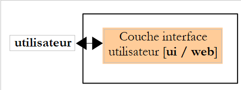

4. Développement MVC (Modèle – Vue – Contrôleur)
Une application web a souvent une architecture 3tier :

- la couche [dao] s'occupe de l'accès aux données, le plus souvent des données persistantes au sein d'un SGBD. Mais cela peut être aussi des données qui proviennent de capteurs, du réseau, ...
- la couche [metier] implémente les algorithmes " métier " de l'application. Cette couche est indépendante de toute forme d'interface avec l'utilisateur. Ainsi elle doit être utilisable aussi bien avec une interface console, une interface web, une interface de client riche. Elle doit ainsi pouvoir être testée en-dehors de l'interface web et notamment avec une interface console. C'est généralement la couche la plus stable de l'architecture. Elle ne change pas si on change l'interface utilisateur ou la façon d'accéder aux données nécessaires au fonctionnement de l'application.
- la couche [interface utilisateur] qui est l'interface (graphique souvent) qui permet à l'utilisateur de piloter l'application et d'en recevoir des informations.
La communication va de la gauche vers la droite :
- l'utilisateur fait une demande à la couche [interface utilisateur]
- cette demande est mise en forme par la couche [interface utilisateur] et transmise à la couche [métier]
- si pour traiter cette demande, la couche [métier] a besoin des données, elle les demande à la couche [dao]
- chaque couche interrogée rend sa réponse à la couche de gauche jusqu'à la réponse finale à l'utilisateur.
Les couches [métier] et [dao] sont normalement utilisées via des interfaces Java. Ainsi la couche [métier] ne connaît de la couche [dao] que son ou ses interfaces et ne connaît pas les classes les implémentant. C'est ce qui assure l'indépendance des couches entre-elles : changer l'implémentation de la couche [dao] n'a aucune incidence sur la couche [métier] tant qu'on ne touche pas à la définition de l'interface de la couche [dao]. Il en est de même entre les couches [interface utilisateur] et [métier].
L'architecture MVC (Modèle – Vue – Contrôleur) prend place dans la couche [interface utilisateur] lorsque celle-ci est une interface web :

Le traitement d'une demande d'un client se déroule selon les étapes suivantes :
- le client fait une demande au contrôleur. Celui-ci voit passer toutes les demandes des clients. C'est la porte d'entrée de l'application. C'est le C de MVC.
- le contrôleur C traite cette demande. Pour ce faire, il peut avoir besoin de l'aide de la couche métier. Une fois la demande du client traitée, celle-ci peut appeler diverses réponses. Un exemple classique est :
- une page d'erreurs si la demande n'a pu être traitée correctement
- une page de confirmation sinon
- le contrôleur choisit la réponse (= vue) à envoyer au client. Choisir la réponse à envoyer au client nécessite plusieurs étapes :
- choisir l'objet qui va générer la réponse. C'est ce qu'on appelle la vue V, le V de MVC. Ce choix dépend en général du résultat de l'exécution de l'action demandée par l'utilisateur.
- lui fournir les données dont il a besoin pour générer cette réponse. En effet, celle-ci contient le plus souvent des informations calculées par le contrôleur. Ces informations forment ce qu'on appelle le modèle M de la vue, le M de MVC.
- L'étape 3 consiste donc en le choix d'une vue V et en la construction du modèle M nécessaire à celle-ci.
- le contrôleur C demande à la vue choisie de s'afficher. Il s'agit le plus souvent de faire exécuter une méthode particulière de la vue V chargée de générer la réponse au client. Dans ce document, nous appelerons vue, aussi bien l'objet qui génère la réponse au client que cette réponse elle-même. La littérature MVC n'est pas explicite sur ce point. Si c'est la réponse qui devait s'appeler vue, on pourrait appeler générateur de vue, l'objet qui génère cette réponse.
- le générateur de vue V utilise le modèle M préparé par le contrôleur C pour initialiser les parties dynamiques de la réponse qu'il doit envoyer au client.
- la réponse est envoyée au client. La forme exacte de celle-ci dépend du générateur de vue. Ce peut être un flux HTML, PDF, Excel, ...
La méthodologie de développement web MVC ne nécessite pas nécessairement d'outils externes. On peut ainsi développer une application web Java avec une architecture MVC avec un simple JDK et les bibliothèques de base du développement web. Une méthode utilisable pour des applications simples est la suivante :
- le contrôleur est assuré par une servlet unique. C'est le C de MVC.
- toutes les requêtes du client contiennent un attribut action, par exemple (http://.../appli?action=liste).
- selon la valeur de l'attribut action, la servlet fait exécuter une méthode interne de type [doAction(...)].
- la méthode [doAction] exécute l'action demandée par l'utilisateur. Pour cela, si besoin est, elle utilise la couche [métier].
- selon le résultat de l'exécution, la méthode [doAction] décide d'une page JSP à afficher. C'est la vue V du modèle MVC.
- la page JSP a des éléments dynamiques qui doivent être fournis par la servlet. La méthode [doAction] va fournir ces éléments. C'est le modèle de la vue, le M de MVC. Ce modèle est placé le plus souvent dans le contexte de la requête (request.setAttribute(" clé ", "valeur "), voire moins fréquemment, dans le contexte de la session ou de l'application. Une page JSP a accès à ces trois contextes.
- la méthode [doAction] fait afficher la vue en transmettant le flux d'exécution à la page JSP choisie. Elle utilise pour cela, une instruction du genre [getServletContext() .getRequestDispatcher(" pageJSP ").forward(request, response)].
Ce modèle d'architecture (Design Pattern) MVC est appelée le modèle " Front Controller " ou encore modèle à contrôleur unique. Une servlet unique traite toutes les requêtes de tous les utilisateurs.
Revenons à l'architecture de l'application web précédente :

Cette architecture correspond à l'architecture ntier suivante :

Il n'y a en fait qu'une couche, celle de l'interface web. De façon générale, une application web MVC à base de servlets et pages JSP aura l'architecture suivante :

Pour des applications simples, cette architecture est suffisante. Lorsqu'on a écrit plusieurs applications de ce type, on s'aperçoit que les servlets de deux applications différentes :
- ont le même mécanisme pour déterminer quelle méthode [doAction] il faut exécuter pour traiter l'action demandée par l'utilisateur
- ne diffèrent en fait que par le contenu de ces méthodes [doAction]
La tentation est alors grande de :
- factoriser le traitement (1) dans une servlet générique ignorante de l'application qui l'utilise
- déléguer le traitement (2) à des classes externes puisque la servlet générique ne sait pas dans quelle application elle est utilisée
- faire le lien entre l'action demandée par l'utilisateur et la classe qui doit la traiter à l'aide d'un fichier de configuration
Des outils, souvent appelés " frameworks ", sont apparus pour apporter les facilités précédentes aux développeurs. Le plus ancien et probablement le plus connu d'entre-eux est Struts (http://struts.apache.org/). Jakarta Struts est un projet de l'Apache Software Foundation (www.apache.org). Ce framework est décrit dans (http://tahe.developpez.com/java/struts/).
Apparu plus récemment, le framework Spring (http://www.springframework.org/) offre des facilités analogues à celles de Struts. Son utilisation a été décrite dans plusieurs articles (http://tahe.developpez.com/java/springmvc-part1/).
Nous présentons maintenant un exemple d'architecture MVC à base de servlet et pages JSP.